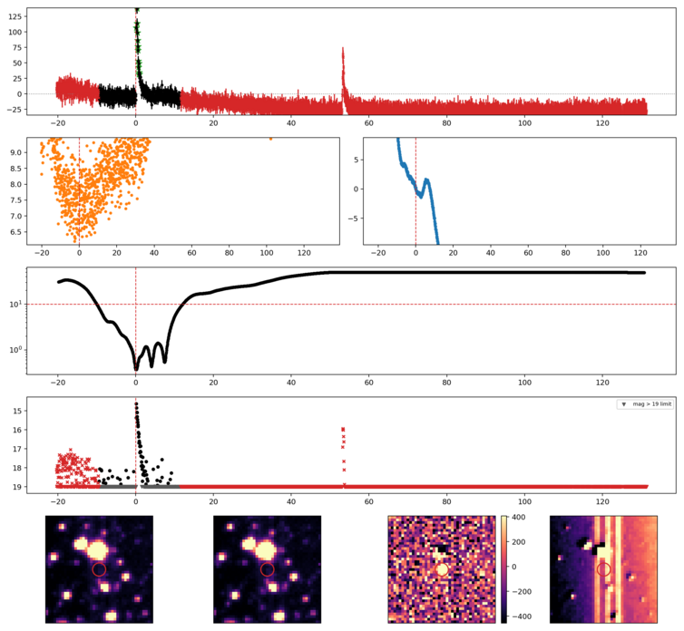
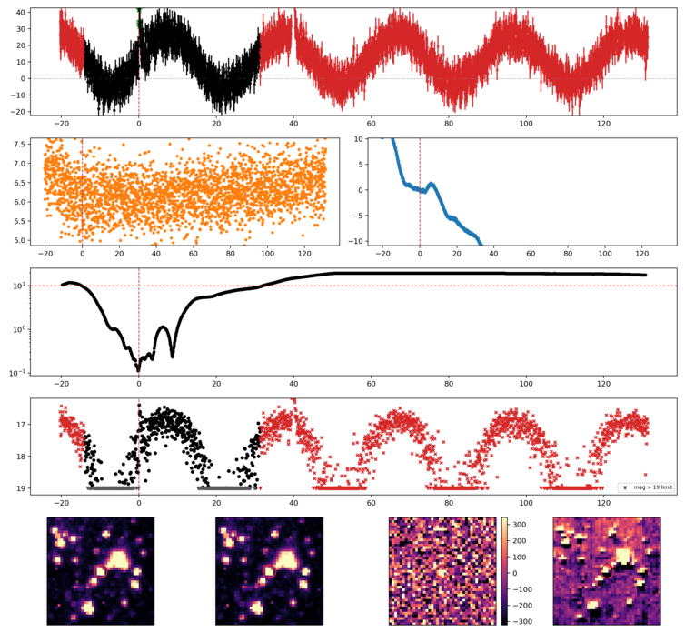
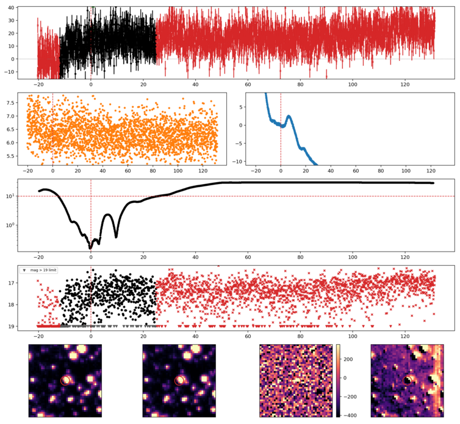
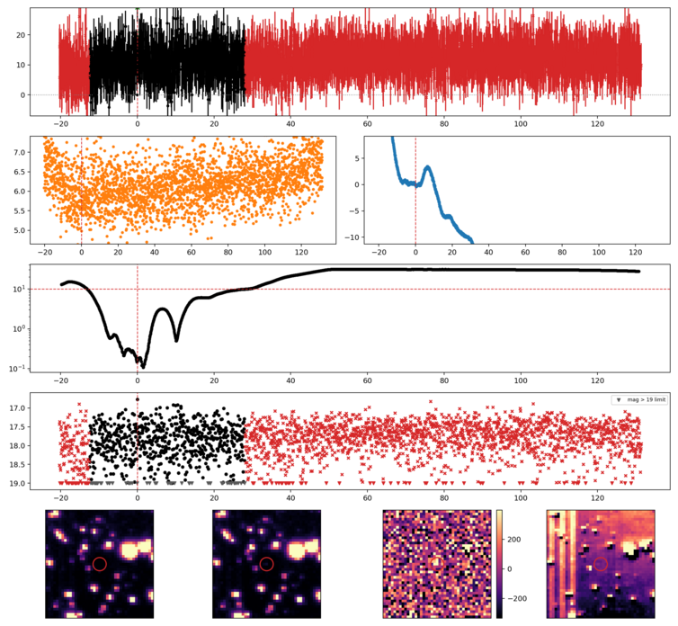
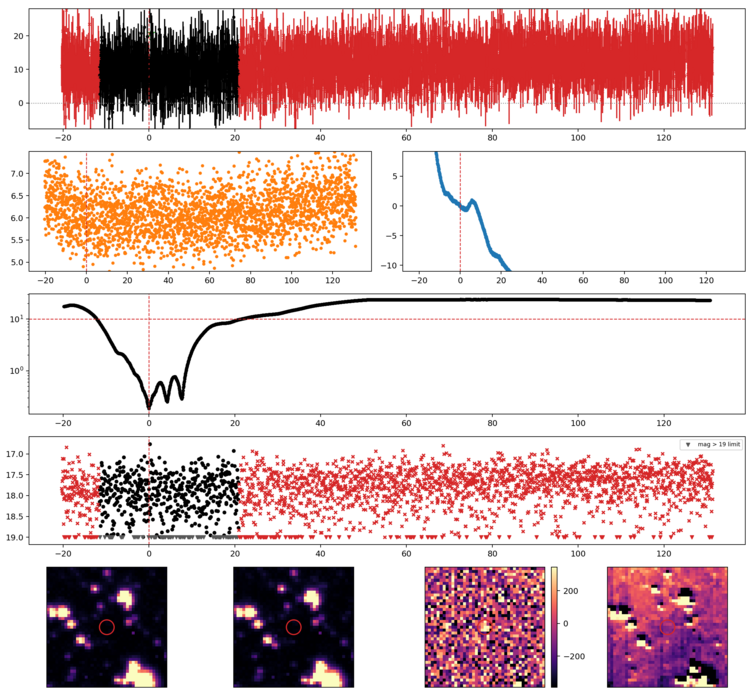
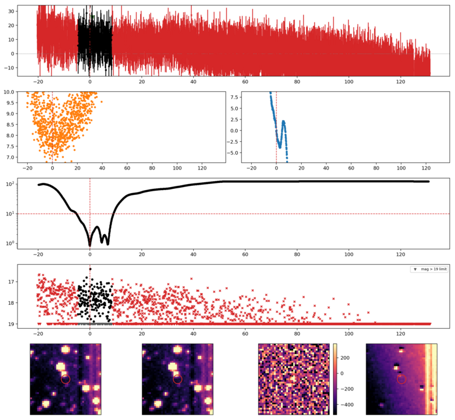
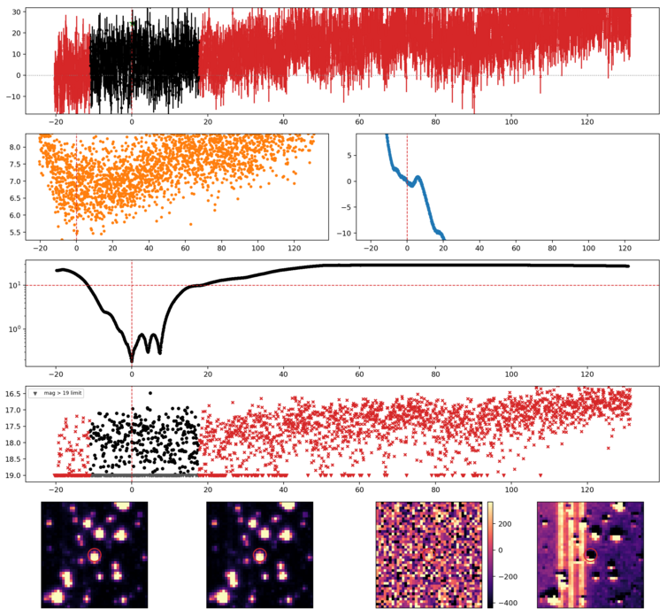
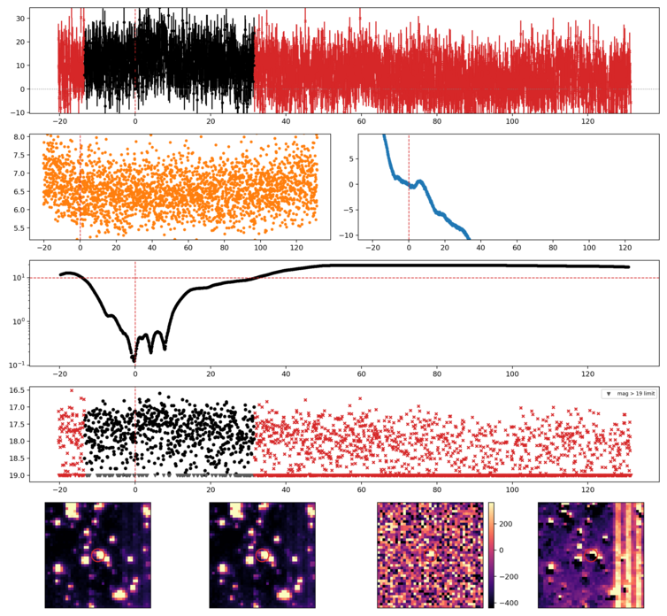
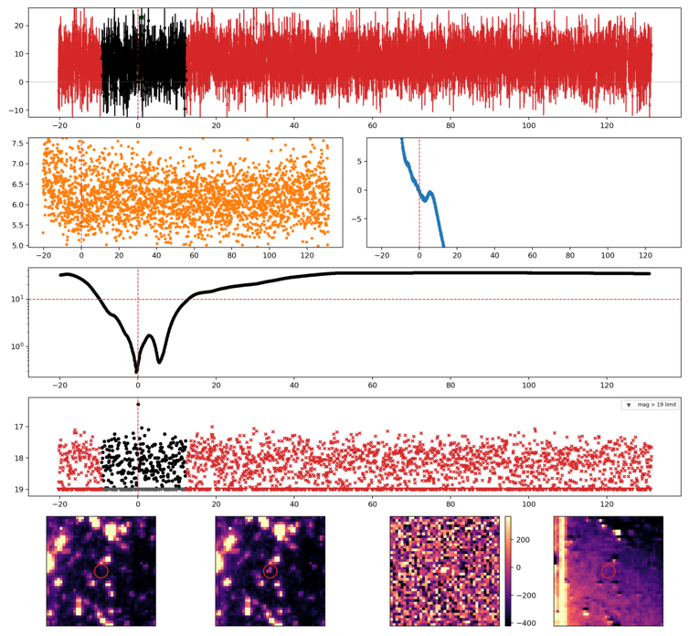

Search centered on refined position (71.0628344, -28.6942940 deg). Gaia coordinates are at J2016.0; proper motions are shown, without epoch propagation. A positional match does not change the candidate flags.
| Source ID / catalog entry | Separation (arcsec) | RA (deg) | Dec (deg) | G (mag) | BP (mag) | RP (mag) | Parallax ± error (mas) | PM RA* ± error (mas/yr) | PM Dec ± error (mas/yr) | RUWE | Variability |
|---|---|---|---|---|---|---|---|---|---|---|---|
| 4879261969869001344 | 1.102 | 71.0626919 | -28.6945734 | 17.846 | 19.186 | 16.627 | 1.827 ± 0.157 | 7.334 ± 0.149 | 7.482 ± 0.171 | 1.704 | NOT_AVAILABLE |
Retrieved 2026-11-04T06:08:26.355179+00:00
Representative chosen by category, detection count, then Gaussian S/N. Original measurements and classifications are retained below.

Search centered on refined position (61.9021795, -20.4892282 deg). Gaia coordinates are at J2016.0; proper motions are shown, without epoch propagation. A positional match does not change the candidate flags.
No Gaia DR3 sources found within 5 arcseconds.
Retrieved 2026-11-04T06:08:28.250087+00:00
Representative chosen by category, detection count, then Gaussian S/N. Original measurements and classifications are retained below.

Search centered on refined position (77.0395919, -9.9793250 deg). Gaia coordinates are at J2016.0; proper motions are shown, without epoch propagation. A positional match does not change the candidate flags.
No Gaia DR3 sources found within 5 arcseconds.
Retrieved 2026-11-04T06:08:29.218433+00:00

Search centered on refined position (66.1135836, -21.6659943 deg). Gaia coordinates are at J2016.0; proper motions are shown, without epoch propagation. A positional match does not change the candidate flags.
No Gaia DR3 sources found within 5 arcseconds.
Retrieved 2026-11-04T06:08:30.047319+00:00

Search centered on refined position (58.5579716, -17.3680195 deg). Gaia coordinates are at J2016.0; proper motions are shown, without epoch propagation. A positional match does not change the candidate flags.
No Gaia DR3 sources found within 5 arcseconds.
Retrieved 2026-11-04T06:08:30.982021+00:00

Search centered on refined position (52.0387958, -16.2904957 deg). Gaia coordinates are at J2016.0; proper motions are shown, without epoch propagation. A positional match does not change the candidate flags.
No Gaia DR3 sources found within 5 arcseconds.
Retrieved 2026-11-04T06:08:31.797618+00:00

Search centered on refined position (58.6462867, -11.3971144 deg). Gaia coordinates are at J2016.0; proper motions are shown, without epoch propagation. A positional match does not change the candidate flags.
No Gaia DR3 sources found within 5 arcseconds.
Retrieved 2026-11-04T06:08:32.660193+00:00

Search centered on refined position (69.7561796, -14.1489421 deg). Gaia coordinates are at J2016.0; proper motions are shown, without epoch propagation. A positional match does not change the candidate flags.
No Gaia DR3 sources found within 5 arcseconds.
Retrieved 2026-11-04T06:08:33.539717+00:00

Search centered on refined position (56.7684495, -13.7016918 deg). Gaia coordinates are at J2016.0; proper motions are shown, without epoch propagation. A positional match does not change the candidate flags.
No Gaia DR3 sources found within 5 arcseconds.
Retrieved 2026-11-04T06:08:34.386164+00:00